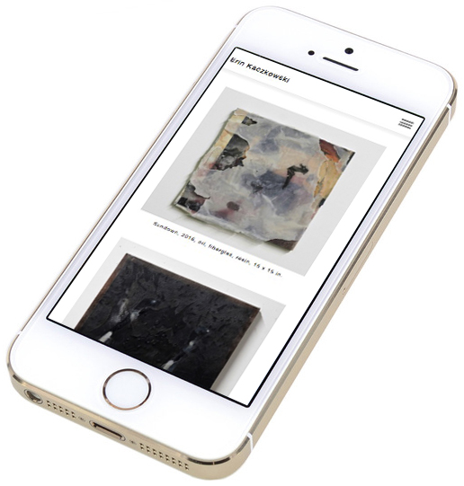
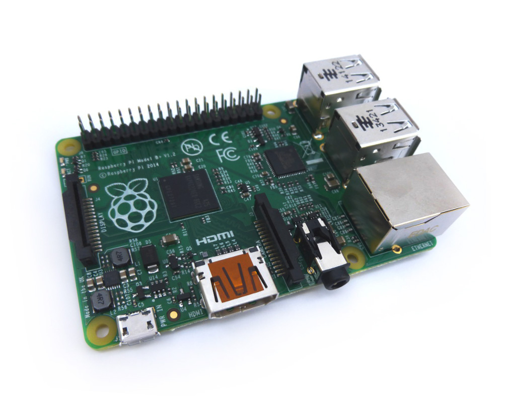

Studio Art Pages is an in-development web project with the goal of creating a donation-based alternative to platforms like Squarespace for art students and practicing studio artists to susttainably maintain professional websites for their work.
We deserve better. As artists we are being overcharged for platforms that provide sub-par website templates and options that are not tailored specifically to our needs. The costs associated with building and hosting this kind of platform have never been lower, and an oppourtunity now exists to build a sustainable, non-predatory platform that empowers artists rather than taking advantage of them.
an art pages template running on a mobile device
Artists participating in our soon-to-launch beta group will be able to peruse website templates specifically designed for practicing studio artists, editing and updating them from a desktop or mobile device. All the functions artists rely on such as adding and editing images, titles, dates etc. as well as cv / resume information will be streamlined and new functions will be added and tested regularly. Artists interested in participating in our limited beta group can sign up for our waitlist through the link below.
Building this kind of platform is not necessarily simple, but it has never been easier to access the resources it requires and it is easily a project that can be taken on by a small group of people with a few hours a week to devote to the project. All we have to do is write the code, find server space and launch it for beta testing.
the future studio art pages server
Studio Art Pages is being built for artists by artists. We understand our own needs and are more capable than ever of building this kind of platform for ourselves in a way that will better serve us as a community.
We are confident that once the platform launches server and maintenance fees will be low enough that we will be able to easily sustain the project on donations from our users. For now we are happy to volunteer the work necessary for the initial build of the platform, but the generous donations we have recieved so far open the option of hiring freelancers to fastrack the process when necessary and puts us closer to our goal of hosting the platform on our own private server.
The Art Pages beta platform is currently scheduled to launch in 2019. All of the hours being put into development are currently volunteered by a small group of visual artists and software engineers providing secondary guidance. The project has had a great deal of momentum since it began in the summer of 2018 and we are well confident that the project will be ready to launch on schedule!